20 K100-통합
도어락 K100 사용하다가 고장이 나거나 못들어 가는 상황이 생기면 1544-3413(24시간, 365일 긴급상담)로 연락하시기 바랍니다.
20.1 설치
질문 1: 스마트 도어락 (K100)의 설치 방법을 알 수 있을까요?
답변 1:
스마트 도어락 (K100)의 설치 영상과 매뉴얼은 아래 링크를 클릭하시면 보실 수 있습니다.
질문 2: 도어락 K100의 설치 가능 규격은 어떻게 되는지요?
답변 2:
(1) 문두께 및 모티스 규격은 다음과 같습니다. 아래 규격에 맞지 않는 경우 설치가 불가능 할 수 있습니다.
문두께: 40 ~ 50 mm
모티스 규격: 세로 110mm, 가로 25mm
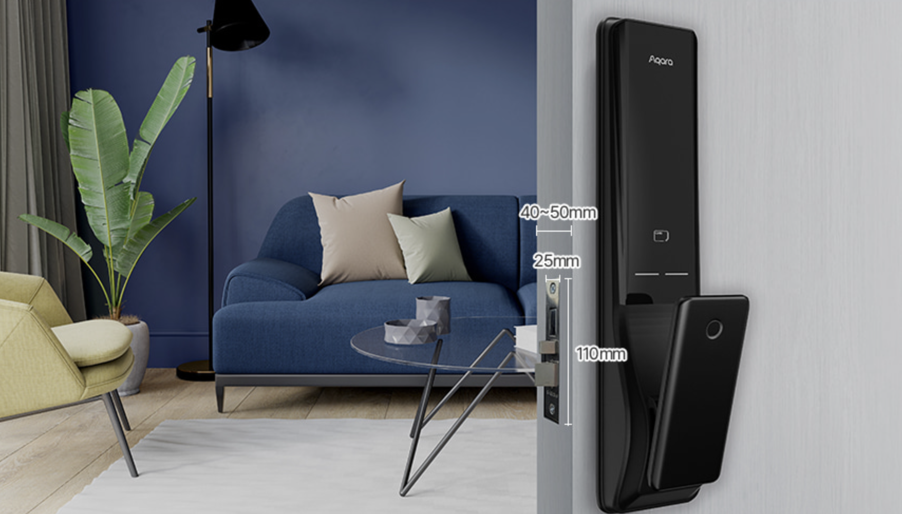
(2) 문종류
- 표준규격 방화문 설치를 지원하는 제품

- 설치 불가능한 문: 유리문, 샷시문, 나무문, 양쪽 열림 현관문

- 제니스 방화문(유럽형 구조의 방화문) 사용시 문두께를 보완하는 추가 부족품 설치가 필요할 수 있으며 보완작업없이 설치할 경우 문제가 생길 수 있습니다.
문 두께를 보완하는 추가 부속품 설치
내부, 외부 비대칭을 보완하는 추가 작업
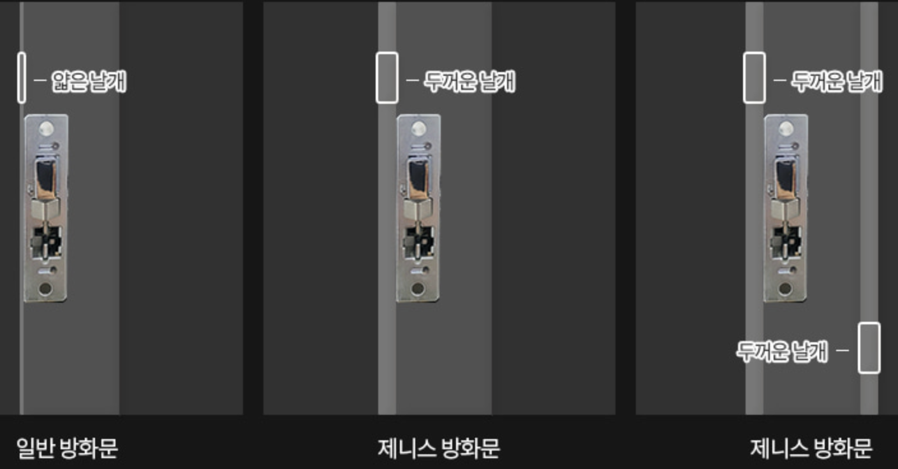
(3) 타공 및 보강판 작업
- 현재 타공 상황에 따라 추가로 보강판 작업이 필요할 수 있으며, 현장 설치 진행시 추가 금액 지불이 필요할 수 있습니다.
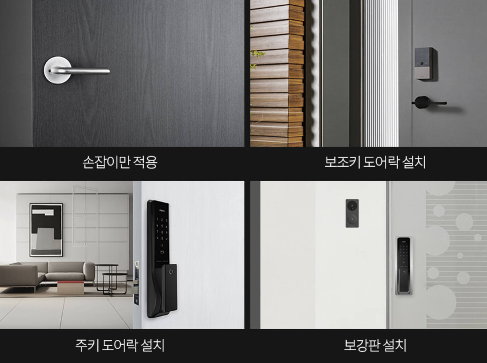
- 해당 제품의 타공 도면은 아래 그림과 같습니다.
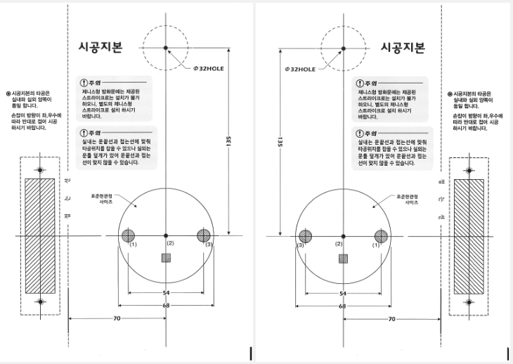
질문 3: 문 두께가 80 mm인데 샤프나 부자재를 이용하여 Aqara 도어락 K100 설치가 가능한지 요?
답변 3:
문 두께가 80 mm일 경우에는 샤프트나 부자재로 적용이 불가능합니다. 도어락 K100은 40~50 mm 일반 방화문 사용 조건에서만 사용 가능한 제품입니다. 일부 중국에서 판매되는 부자재의 경우도 문 두께가 65mm까지만 설치 지원합니다.
질문 4: 제니스 방화문일 경우 부자재로 보완하여 설치 가능하다고 들었습니다. 어떤 추가 부속을 보완하게 되나요?
답변 4:
제니스 전용 스트라이커를 추가 구매하여 보완할 수 있습니다. 또한 문 두께 보완 또는 내 외부 비대칭 보완 작업이 필요할 수 있습니다.
질문 5: 제니스형 스트라이커, 보강판 등의 부품만 따로 구매가 가능한가요?
답변 5:
네, 가능합니다. 아카라 공식홈페이지에서 액세서리 카테고리로 접속하시면 도어락의 부자재만 별도 구매가 가능하며 해당 페이지 내에서 구매 가능한 목록을 제외한 부품은 별도 구매가 어려운 점 양해 부탁드립니다.
질문 6: 월패드 연동하려고 합니다. 수신기는 어떻게 설치하고 연동하면 되나요?
답변 6:
월패드 모델 등 설치환경이 다양하여 상세한 안내가 어려우며, 수신기는 아래와 같은 방법으로 설치 가능합니다.
네이버 아카라카페에 가입하시면 커뮤니티 회원분들께 자가설치 팁을 받을 수 있습니다.
- K100 RF447 모듈 설치는 건전지를 모두 제거하신 후 진행해 주십시오.
K100 RF447 모듈 설치 방법
송신기를 월패드에 설치하세요.
도어락 배터리 커버를 열고 아래와 같이 RF447 수신모듈 장착부에 수신기를 장착해 주세요. 핀 방향을 정확하게 확인 후 꽂아 주세요.
수신 모듈로 인해 애플홈 QR코드가 가려지므로, 애플홈킷 사용자분께서는 수신 모듈 장착전에 애플홈에 도어락을 추가하신 후 진행해 주세요.

K100 RF447 모듈 등록 방법
도어락 후면의 배터리 커버 내 [R] 버튼을 누릅니다.
도어락 키패드에 [5] 누릅니다.
[5] 버튼을 눌러 RF447 모듈을 등록합니다. => 음성 멘트: (등록 성공시) “등록 성공”
질문 7: 현재 코콤 월패드에 연동이 되어 있는데 도어락 설치후 연동이 가능한가요? 추가 부품과 비용을 알고 싶습니다.
답변 7:
월패드 연동 관련한 문의는 들락날락 컴퍼니를 통해 상담이 가능합니다. 아래 링크 접속하시면 해당 스토어 페이지로 접속이 가능합니다.
질문 8: 아카라 도어락 설치를 고려하고 있습니다. 저희 집이 60T 성우 스타게이트 도어를 사용하고 있는데, 여기에 아카라 도어락 설치가 가능한 지요?
답변 8:
제니스 방화문을 제외한 다른 설치 가능한 일반 방화문의 규격은 40-50mm입니다. 이 규격을 벗어날 경우 설치가 불가능합니다.
질문 9: 기존에 게이트맨 도어락 설치되어 있는데 이 자리에 K100 설치가 가능할까요?
답변 9:
K100 스마트 도어락은 2개의 타공이 필요한 푸시풀 도어락이며, 타공위치 및 타공 사이즈는 KS C 9806 규격을 따릅니다. 만약, 기존 도어락이 보조키 방식인 경우라면 추가 타공이 필요할 것이며, 푸시풀 방식인 경우 기존의 타공을 이용할 수도 있습니다. 다만, 기존 도어락 연식과 모델에 따라 타공위치 및 사이즈가 다르다면 추가로 보강판이 필요할 수 있으며 더욱 정확한 사항은 설치 기사님께서 현장 방문 후 안내드릴 수 있습니다.
- 질문/답변 4의 시공지본 참고 하십시오.
질문 10: 보강판 사이즈는 어떻게 될까요?
답변 10:
보강판 사이즈는 가로: 11cm 세로: 48.5cm 입니다.
질문 11: 실외 설치해도 되는지요? 방수는 가능한지요?
답변 11:
본 제품은 일반 거주 환경의 방화문을 타겟으로 고안된 제품으로 직사광선 또는 비바람에 노출되는 실외 사용 용도로는 적합하지 않습니다.
질문 12: 이사 할 때 이전 설치가 가능할 까요?
답변 12:
별도로 이사 시 연락을 주시면 설치 기사를 연결 해 드리는 서비스는 제공되지 않습니다. 다만, 아카라 K100 도어락의 경우 시중에 유통되는 많은 도어락의 규격과 호환되는 일반 규격입니다. 따라서 이사 시 주변 도어락 설치 업체를 통해 어렵지 않게 이전 설치가 가능합니다.
질문 13: 제품은 받았는데 설치기사 해피콜은 언제 오나요?
답변 13:
설치 기사님 배정은 완료 되었으며 기사님께서 순차적으로 전화 드리고 방문 할 예정입니다. 조금만 시간 양해 부탁드립니다. (경우에 따라 기사 연락처 안내 가능)
질문 14: 도어락을 주문하려고 하는데 이사 준비 때문에 바로 설치는 불가능해서 미리 구매하면 나중에 비용지불하고 추후에라도 설치가 가능한지요?
답변 14:
네 가능합니다. 단, 구매하신 뒤에 꼭 고객센터를 통해 주문 정보와 함게 별도로 요청해 주시면 됩니다.
질문 15: 문 두께가 30mm인데, 부자재를 통해서 설치가 가능한지요?
답변 15:
문두께가 최소 4~5cm이상 부터 설치가 가능하며, 3cm의 경우 설치가 어렵습니다.
20.2 사용 팁
질문 1: 스마트도어락 K100 설치할 경우 아카라 허브도 따로 구매해야되나요?
답변 1:
Apple Home Key, 자동화 기능 등 IoT기능을 사용하시려면 아카라 허브를 구매하여 이용 하셔야합니다. 허브의 종류는 관계 없으며 E1으로도 사용 가능합니다.
질문 2: 스마트도어락 K100의 초기 비밀번호는 몇 번인가요?
답변 2:
도어락 출고 시 초기 비밀번호는 123456으로 설정됩니다. 초기 비밀번호에서 원하시는 비밀번호로 설정하신 뒤 사용하시면 됩니다.
질문 3: 스마트 도어락 K100 초기화하는 방법은 무엇인가요?
답변 3:
실내에서 도어락의 배터리 커버를 열고, 배터리 칸 아래의 리셋 버튼(R)을 3초 이상 누르세요. 디지털 잠금 모드인 경우 전면 패널의 “√” 버튼을 누르거나 프롬프트에 따라 관리자 권한을 확인하세요. 이렇게 하면 도어락이 초기화됩니다.
질문 4: 스마트 도어락 K100는 어떻게 잠금을 해제할 수 있나요?
답변 4:
스마트 도어락 K100는 지문, 비밀번호(일반 비밀번호, 일회용 비밀번호, 주기적 비밀번호), HomeKit/Siri(블루투스, 원격, 애플 홈 키), Aqara Home(블루투스, 원격), NFC키, Google Assistant 등 총 10가지 주요 해제 방법을 지원합니다.
현관까지 나가지 않더라도 실내 방에서 Aqara Home 애플리케이션을 통해 잠금을 해제할 수 있습니다. 만약, 집에 Aqara 허브제품 또는 Apple Home 제품이 있다면, 집 밖에서도 원격으로 잠금을 해제할 수 있습니다.
질문 5: 스마트 도어락 K100는 음성으로 잠금을 해제할 수 있나요?
답변 5:
네, Siri 및 Google Assistant를 사용하여 음성 조작으로 잠금을 해제할 수 있습니다. 그러나 Aqara Home 앱은 음성 조작을 지원하지 않습니다.
질문 6: 스마트 도어락 K100는 최대 몇 개의 비밀번호 세트를 처리할 수 있나요?
답변 6:
스마트 도어락 K100는 최대 75개의 비밀번호를 처리할 수 있습니다. 일반 비밀번호는 50개까지, 정기 비밀번호는 25개까지 설정할 수 있습니다.
질문 7: 스마트 도어락 K100은 일회성 비밀번호를 지원하나요?
답변 7:
네, Aqara Home 앱에서 일회용 비밀번호를 생성할 수 있습니다. 일회용 비밀번호는 게이트웨이 없이 원격에서 생성할 수 있으며, 생성 직후 오직 1회만 사용할 수 있으며 약 15분의 유효시간 이후에는 자동 만료됩니다.
질문 8: 스마트 도어락 K100는 정기 비밀번호 설정을 지원하나요?
답변 8:
네, 일회용 비밀번호보다 오래동안 사용할 수 있는 정기 비밀번호 기능을 지원합니다. Aqara Home 앱을 통해 블루투스로 도어락을 연결하고, 특정 시간 (예: 오전 10:00 ~ 오후 14:00) 및 특정 기간 (예: 매주 월요일)에 대한 정기 비밀번호를 설정할 수 있습니다.
질문 9: 스마트 도어락 K100에는 문이 열린 상태를 유지하는 모드가 있나요?
답변 9:
네, Aqara Home 앱을 통해 블루투스로 도어락을 연결하고, 앱> 도어락> 환경 > “상시 열림 모드”를 활성화할 수 있습니다. 이 모드는 방문객이 많은 장소에서 유용합니다. 상시 열림 모드는 수동 잠금을 사용하여 원래대로 해제할 수 있습니다.
질문 10: 스마트 도어락 K100는 여러 대의 휴대폰을 동시에 지원하나요?
답변 10:
스마트 도어락 K100은 관리자 휴대폰과 1:1로 블루투스 통신을 합니다. 따라서, 한 대의 휴대폰만 지원합니다. 단, Aqara Home 앱 > 내 정보> 홈 관리 > 홈 설정으로 진입하여, 가족 구성원을 사용자로 초대할 수 있습니다.
질문 11: 스마트 도어락 K100의 관리자 계정은 무엇이며 어떻게 설정하나요?
답변 11:
Aqara Home 앱을 처음으로 도어락을 추가할 때 설정된 계정이 기본으로 관리자 계정입니다. Aqara Home 앱에서 도어락을 추가할 때 계정을 통해 더 많은 관리자 계정을 추가할 수 있습니다.
질문 12: 스마트 도어락 K100에는 어떤 종류의 계정 권한이 있나요?
답변 12:
Aqara Home 앱에서는 관리자 외에도 일반 사용자가 있습니다. 일반 사용자 권한은 일상적인 해제 기능만 지원합니다.
질문 13: 스마트 도어락 K100의 사용자 수 및 유형에 대한 제한은 무엇인가요?
답변 13:
스마트 도어락 K100은 최대 50명의 사용자를 지원합니다. Aqara Home 앱 > 도어락 > 사용자 관리에서 관리자 또는 일반 사용자를 추가할 수 있습니다.
사용자 1명은 최대 10개까지의 지문을 등록할 수 있습니다.
질문 14: 도어락 K100의 NFC를 등록하는 방법을 알려 주세요.
답변 14:
아카라 카페에 재미있는 에피소드와 함께 등록한 방법이 자세히 설명되어 있으니 참고하시기 바랍니다.
질문 15: 스마트 도어락 K100 제품의 경우 도어락 열리면 알람이 오는지요?
답변 15:
네 알람이 오게 할 수 있습니다. 가족 구성원별로 사용가능한 비밀번호 지문등을 별도로 저장할 수 있으며, 구성원 도착시 앱을 통해 알림을 받으실 수 있도록 자동화 설정이 가능합니다.
질문 16: 도어락의 설정 모드에 들어 가는 방법과 기본 설정 메뉴를 설명해 주실 수 있는지요?
답변 16:
도어락의 설정 모드로 진입하기 위해 후면 배터리 커버를 열러 “R” 버튼을 누르면, 키패드 사용과 관련된 음성 멘트가 나옵니다. 이후 음성 멘트에 따라 아래 표를 참고하여 설정하시면 됩니다.
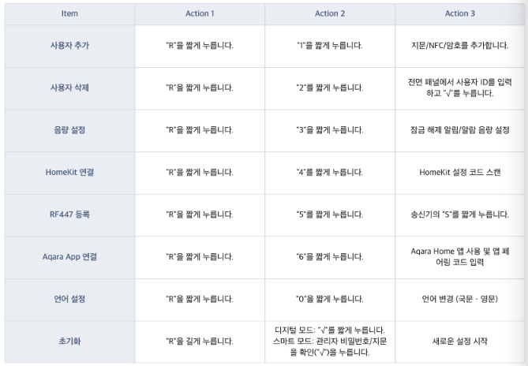
질문 17: K100 도어락은 어떤 방식을 열 수 있는지요?
답변 17:
지문, 비밀번호, NFC, Apple Home, 홈 키, Google Home, 삼성 SmartThings (2024년 상반기 지원 예정), 아카라 홈, 임시 비밀번호, 음성 명령 그리고, 웰패드 연동 옵션을 제공합니다.
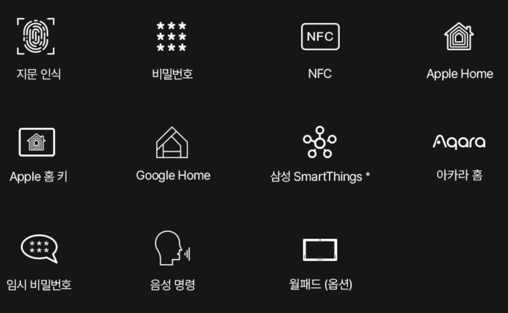
질문 18: K100 도어락이 안전한 이유는 무엇인가요?
답변 18:
아카라 스마트 도어락 K100은 고온 감지, 침입 및 파손 경보 기능과 전기 충격 무력화 기능이 기본으로 탑재되어 있습니다.
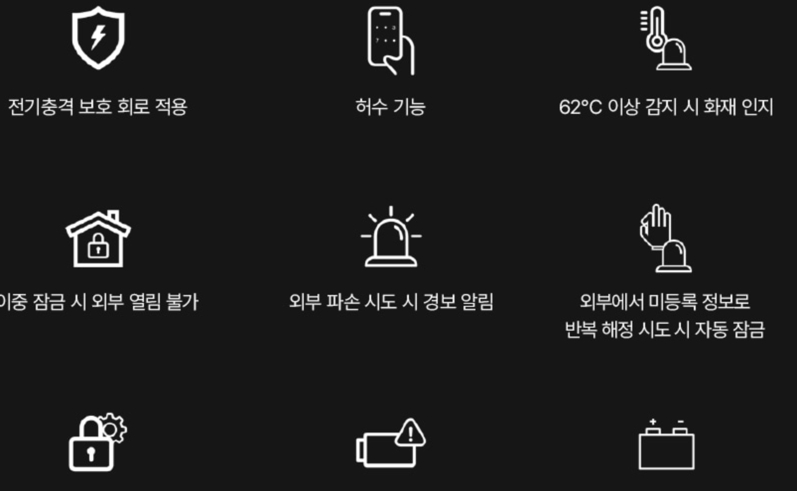
질문 19: 저희는 맞벌이 부부입니다. 도어락 K100을 사용하면 남편이 언제 출근 또는 퇴근하는 지 확인이 가능한지요?
답변 19:
네, 출입 기록 또는 알림 설정을 통해 확인 가능합니다.
질문 20: 도어락 K100의 펌웨어 업데이트를 하면 기존 셋팅이 다 초기화 되는지요?
답변 20:
아닙니다. 펌웨어를 업데이트를 해도 기존 설정값 및 자동화 설정은 변경되지 않습니다.
질문 21: 도어락 자체에 카메라랑 벨이 있는지요?
답변 21:
해당 제품은 카메라와 벨이 있는 제품이 아닙니다. 카메라와 벨로 구성된 제품은 ‘스마트 도어벨 G4’ 입니다. 참고 부탁드립니다.
질문 22: 가족 (구성원) 귀가 시 알림 가능한가요?
답변 22:
네 가능합니다. 가족 구성원별로 사용가능한 비밀번호 지문등을 별도로 저장할 수 있으며, 구성원 도착시 앱을 통해 알림을 받으실 수 있도록 자동화 설정이 가능합니다.
질문 23: 제품의 시리얼 넘버 부착 부위가 어떻게 되나요?
답변 23:
시리얼번호는 제품 리어 핸들 우측면과 제품 프런트바디 안쪽 러버 2곳에 부착되어 있습니다.설치된 환경에서는 제품 리어 핸들 우측면에서 확인 가능합니다
질문 24: 손님이 왔을 때 원격으로 1회성 비밀번호를 발급할 수 있나요?
답변 24:
네, 가능합니다. 아래 아카라 카페에 그 내용이 잘 정리되어 있으니 참고 하시기 바랍니다.
질문 25: 도어락 K100과 다른 아카라 디바이스를 연동하여 가족 구성원 모두가 만족하는 스마트 홈을 꾸미고 싶습니다. 가족 구성원 별로 씬을 구성할 수 있는지요?
답변 25:
네, 다른 아카라 디바이스와 연동하여 가족별로 원하는 씬을 구성하실 수 있습니다.
- 본 기능은 Aqara 허브가 반드시 필요합니다.
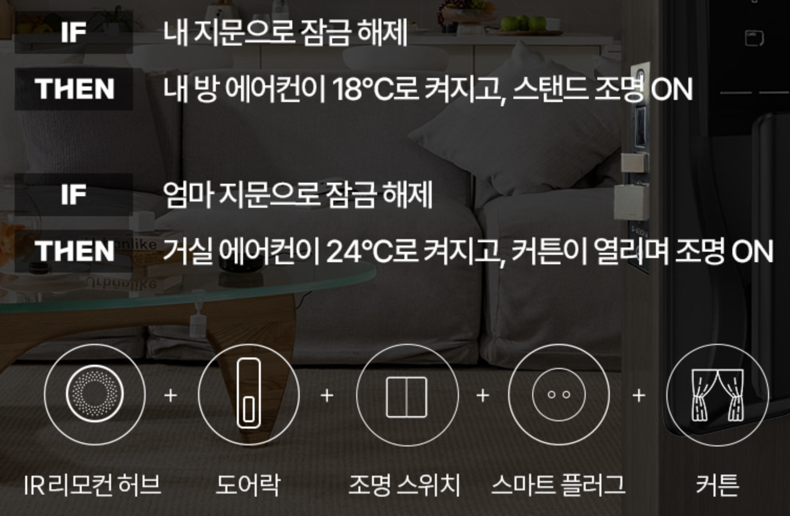
질문 26: 낯선 사람이 도어락을 열려고 할때 누구인지 확인할 수 있나요?
답변 26:
네, 가능합니다. 예를 들어, 누군가가 여러 번호를 바꿔가며 비밀번호를 누를 때 스마트 비디오 도어벨 G4가 자동으로 그 상황을 녹화해 줍니다.
- 본 기능은 Aqara 허브가 반드시 필요합니다.
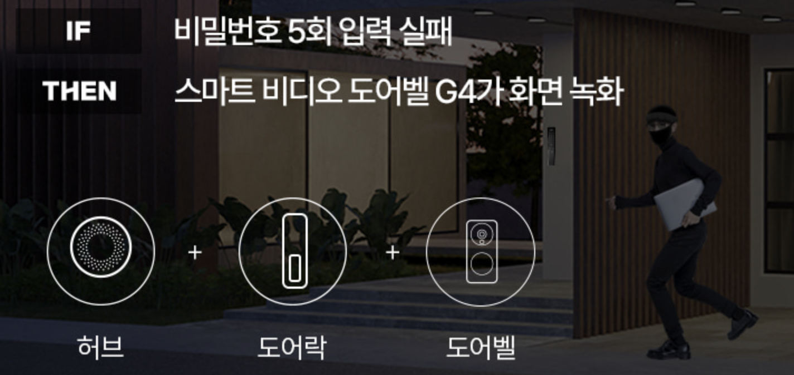
질문 27: 요리 중에 손님이 방문했을 때 직접 현관까지 나갈 필요 없이 도어락을 여는 방법이 있는지요?
답변 27:
네, 직접 현관까지 나갈 필요 없이 무선 컨트롤러로 잠금 해제가 가능합니다.
- 본 기능은 Aqara 허브가 반드시 필요합니다.
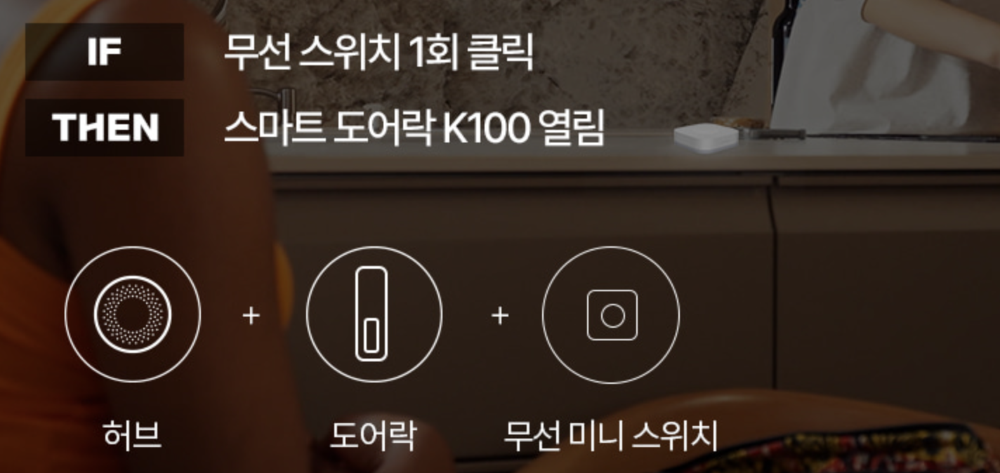
질문 28: Apple Home Key를 추가하는 방법은 무엇인가요?
답변 28:
먼저 iPhone iOS 15 이상 또는 Apple Watch OS 8 이상이 필요합니다. HomeKit 앱에서 스마트 도어락 K100을 추가한 후 Apple Wallet에 Apple의 홈 키 가상 도어 카드가 자동으로 생성됩니다.
질문 29: Apple Home Key를 사용하는 방법은 무엇인가요?
답변 29:
Apple Home Key는 Apple의 NFC 기술을 기반으로 한 가상의 홈키입니다. 표준 모드에서는 Apple Wallet을 열고 도어 카드를 선택한 다음 iPhone/Watch를 스마트 락의 NFC 식별 영역에 가까이 가져가야 합니다. 바로 가기 모드에서는 iPhone/Watch를 잠금 해제할 필요가 없으며, 디바이스를 NFC 식별 영역에 가까이 가져가기만 하면 됩니다.
질문 30: Apple Home Key를 공유하는 방법은 무엇인가요?
답변 30:
사용자는 다른 Apple 사용자를 가족에 초대할 수 있습니다. 초대받은 사용자가 가입하면 도어 카드가 자동으로 초대받은 사용자의 Wallet에 생성됩니다.
질문 31: 애플 홈을 사용중인데 가족들이 도어락 K100을 사용할 수 있도록 구성원을 추가하고 싶은데 어떻게 하면 되는지요?
답변 31:
다음 애플 지원 사이트를 참고하여 구성원을 추가 하시기 바랍니다.
질문 32: K100 도어락과 Apple 홈킷 연결 방식이 Aqara 허브를 통하는 방식인지요?
답변 32:
아닙니다. K100은 네이티브 Apple 홈킷 도어락이기 때문에 Aqara허브를 거치지 않고 바로 홈킷에 연결됩니다. 참고로 홈킷의 제어 방식과 Aqara 제어 방식은 다음과 같습니다.
(1) 홈킷 원격제어
Apple 홈앱 <-와이파이-> 홈허브(애플TV/홈팟 등) <-블루투스-> K100 도어락
(2) Aqara 원격제어
Aqara앱 <-와이파이->Aqara 허브 <-Zigbee-> K100 도어락
질문 33: 도어락 K100 을 애플 홈킷과 연동할 경우, 계정이 다른 여러대의 애플 디바이스가 연동되는데 문제가 없을까요? 예를 들면,
애플 계정이 다른 아이폰 2대
A 계정에 연결된 아이맥/아이패드/워치/애플티브
B 계정에 연결된 아이패드
A 계정에 연결된 홈팟미니 5대
답변 33:
네, 문제는 없습니다. 다만, 애플 홈킷이 구성원별 통제권한을 다르게 부여하는 점 참고 하십시오. 즉, 액세서리 추가 제거 및 설정 변경 할 수 있는 권한을 통제할 수 있으나, 특정 구성원은 특정 공간만 컨트롤 할 수 있게 제한하는 것은 불가합니다. 고객님의 계정에 장치 등록, 가족 구성원에게 홈 공유로 진행하시면 됩니다.
질문 34: 도어락 K100 제품을 애플 홈킷과 연동할 경우, 홈팟이 있으면 아카라 허브를 구매하지 않아도 되는지요?
답변 34:
도어락 K100는 애플 홈킷용 네이티브 제품이므로, 홈팟만 있어도 홈킷 연동이 가능합니다. 다만, 스마트홈을 구현하기 위해 다른 아카라 디바이스가 필요하다면, 아카라허브는 필수입니다. 다른 디바이스 추가를 통해 다양한 자동화 씬을 구현해 보실 수 있습니다.
질문 35: 도어락이 열려 있으면 열려 있다고 경고 알림을 주는 기능이 있는데 혹시 시간을 좀 더 길게 설정할 수 있을 까요?
답변 35:
도어락 메인화면의 우측 상단 […]을 클릭하신 후 음량 및 언어에서 문이 닫히지 않은 상태 알람으로 시간 설정이 가능합니다.
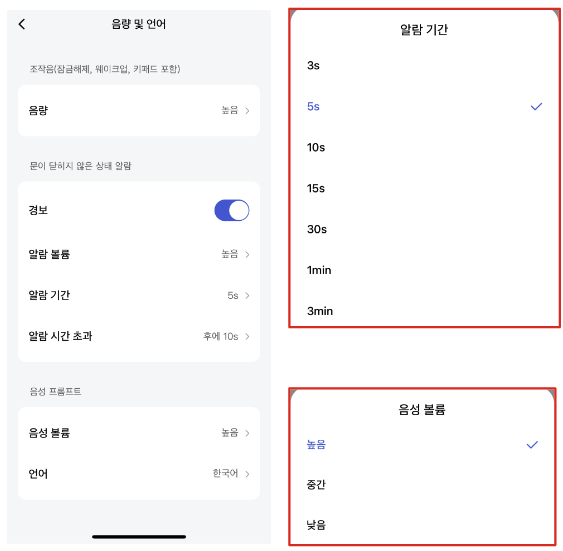
질문 36: K100과 연동되는 월패드가 무엇이 있는지요?
답변 36:
K100은 다음과 같은 월패드와 연동이 됩니다.
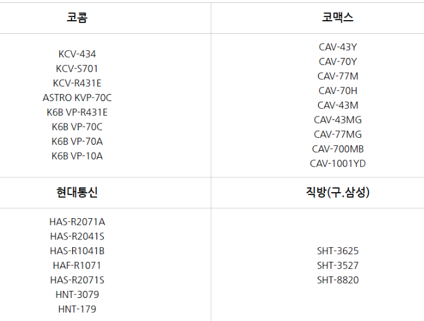
만약 그 외의 월패드를 사용하고 계신다면, 월패드 회사쪽으로 RF 447 송신모듈 이용 가능 여부 문의 하시기 바랍니다.
참고로 연동 방식은 릴레이 접점 방식 또는 2선 접점 방식입니다.
질문 37: 스마트 도어락 K100과 관련한 자동화를 만들 때 사용할 수 있는 IF 실행 조건과 THEN 실행 결과에 무엇이 있는지요?
답변 37:
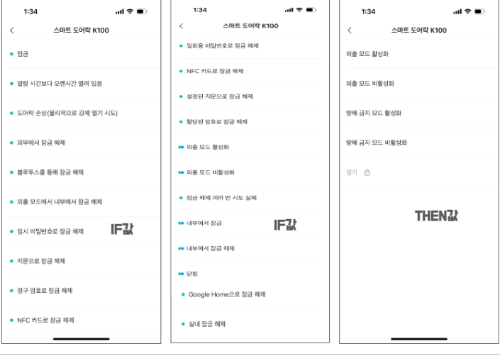
참고로 위 THEN 실행 결과에서 “열기”는 IF 실행 조건에 다음 디바이스를 사용할 때만 활성화 됩니다.
무선 미니 스위치 T1
무선 리모트 스위치 1구
무선 리모트 스위치 2구
큐브 T1 Pro
질문 38: 화재시 자동으로 문이 열리는지요?
답변 38:
네, 화재 발생 시 실내 온도가 65도 이상 감지되었을 때 자동으로 락이 해제 되어 문을 열고 나갈 수 있습니다.
20.3 Troubleshoot
질문 1: 도어락 사용하다가 고장이 나거나 못들어 가는 상황이 생기면 어떻게 해야 되나요?
답변 1:
제품 고장의 경우 1544-3413(24시간, 365일 긴급상담) 로 연락하시어 말씀 부탁드립니다.
질문 2: 현재 도어락 K100을 사용 중인데 Apple 홈키 가족공유에 어려움을 겪고 있습니다. 해결책이 있는지요?
답변 2:
K100은 네이티브 Apple 홈킷으로 Aqara허브를 거치지 않고 홈킷에 블루투스를 통해서 직접 연결되는 방식입니다. 그래서 K100과 Apple홈허브와의 거리가 너무 멀리 떨어져 있다면, 홈키 사용이 원활하지 않을 수 있습니다.
질문 3: 얼마전에 도어락 K100을 설치했는데 문이 한번에 잘 열리지 않습니다. 바로 안 열리고 한번 안쪽으로 당긴 후 밀어야 열립니다. 한번 밀어서 안 열리면,안쪽으로 당긴 (참고로, 강하게 당길 필요는 없습니다) 다음 다시 밀어야 열립니다.
답변 3:
말씀하신 증상은 문이 닫힐 때 너무 가볍게 닫혀서, 문이 닫히는 속도보다 모티스의 데드볼트가 나오는 속도가 빠르다보니, 데드볼트가 정확히 맞게 안 들어가는 현상이 발생하는 것 같습니다. 이럴 경우에는 문 상단의 도어클로저를 약간 조절해 주는 방법으로도 해결하실 수 가 있습니다. 아래 영상을 참조하여 도어클로저의 나사 부분을 조금 가볍게 풀어 주면서 문이 조금 빠르게 닫히게끔 해 주시면 됩니다.
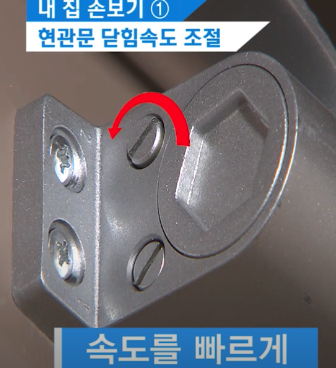
질문 4: 도어락 K100을 설치한 후, 문이 안에서 밖으로는 잘 열리는데, 밖에서 당겼을 때 잘 열리지 않습니다. 무엇이 문제인가요?
답변 4:
현관문이 쳐저 있을 경우 도어락 하단부에 문제가 생길 수 있습니다. 현관문 쳐진 상태를 수리하셔야 근본적인 문제를 해결할 수있습니다. 참고로, 노후화된 도어 클로져가 현관문 쳐짐의 원인이 됩니다.
질문 5: 비상키는 따로 없는지요? 만약 도어락의 배터리 방전시 어떻게 문을 열어야 하는지요?
답변 5:
본 제품응 별도의 물리키 개폐 방식은 제공되지 않습니다. 단, 배터리 방전 시 외부에서 임시로 9V 전원입력(건전지)을 통해 전원을 공급할 수 있는 단자는 제공됩니다.
질문 6: 도어락 K100을 애플워치를 이용해서 열려고 하는데 잘 안됩니다. 아이폰으로는 잘 열리는데 애플워치로는 왜 열리지 않을 까요?
답변 6:
애플워치 지갑에도 홈키가 생성되었는지 확인하시고, 생성되었다면 익스프레스 모드가 활성화 되었는지 확인하십시오.
질문 7: 비밀번호 입력 오류가 발생하여 도어락이 잠겼습니다. 어떻게 해야 하나요?
답변 7:
지문, 비밀번호 및 NFC를 포함한 모든 잠금 해제 시도가 5회 연속으로 잘못되면, 도어락에서 경보음을 울리며 잠금 처리되고, Aqara Home 앱에 경고 푸시가 발송됩니다. 1분 이내에 모바일 앱(Aqara Home/HomeKit)을 통해 도어락 잠금을 즉시 해제할 수 있습니다. 그러나 앱을 바로 실행하지 못했다면, 1분 동안 기다려주세요. 1분 후에는 키패드가 정상화되어 다시 비밀번호나 지문으로 인증을 시도할 수 있습니다.
질문 8 : 비밀번호 변경 후에도 초기 비밀번호로 문이 열리는데 어떻게 해야되나요?
답변 8:
도어락을 초기화 후 이용해보시기 바랍니다. (초기화방법 : 실내에서 도어락의 배터리 커버를 열고, 배터리 칸 아래의 리셋 버튼(R)을 3초 이상 누르세요. 디지털 잠금 모드인 경우 전면 패널의 “√” 버튼을 누르거나 프롬프트에 따라 관리자 권한을 확인하세요. 이렇게 하면 도어락이 초기화됩니다)
질문 9: 문을 열고 나가다가 갑자기 비상경보음이 나면서 “누군가 도어락 파손 시도” 라는 앱 알림이 떴습니다. 어떤 경우에 발생하게 되고 경보음은 어떻게 끌수있나요?
답변 9:
문이 닫힌 상태에서 데드볼트 아래 서브 래치(센서)가 눌린 상태에서 잠금해제된 경우입니다. 비상경보음이 울리는 경우에는 배터리를 분리한 후에 다시 끼우는 방법 밖에 없습니다.
질문 10: 아카라 허브에 이미 연결된 도어락 통신을 해제하거나 다른 허브로 교체 연결이 가능한 지요?
답변 10:
네 두가지 모두 가능합니다. 아래 아카라 카페에 그 내용이 잘 정리되어 있으니 참고 하시기 바랍니다.
질문 11: 자동화를 이용해서 원격으로 도어락을 열고 싶습니다. 그런데, 자동화를 구성할 때 바로 “열기” 를 사용할 수 없는데 어떻게 해야 하는 지요?
답변 11:
도어락의 보안 중요성으로 인해 자동화를 구성할때 바로 ’열기’를 사용할 수 없고, 도어락의 “원격 기능” 설정 항목을 보시면 “자동화를 통한 잠금 해제”라는 옵션이 있습니다. 이 옵션을 활성화하시고 자동화 설정을 진행하셔야 합니다. 자세한 활용예는 다음 아카라카페 글을 참조 하시기 바랍니다.
질문 12: 비밀번호 입력 오류가 발생하여 도어락이 잠겼습니다. 어떻게 해야 하나요?
답변 12:
지문, 비밀번호 및 NFC를 포함한 모든 잠금 해제 시도가 5회 연속으로 잘못되면, 도어락에서 경보음을 울리며 잠금 처리되고, Aqara Home 앱에 경고 푸시가 발송됩니다. 1분 이내에 모바일 앱(Aqara Home/HomeKit)을 통해 도어락 잠금을 즉시 해제할 수 있습니다. 그러나 앱을 바로 실행하지 못했다면, 1분 동안 기다려주세요. 1분 후에는 키패드가 정상화되어 다시 비밀번호나 지문으로 인증을 시도할 수 있습니다.
질문 13: 아카라 도어락 사용 중인데 관리자 비밀 번호를 잊어 먹었습니다. 혹시 방법이 없을 까요?
답변 13:
우선 지문을 등록했다고 하시면, 사용하시는 지문으로 해제가 가능합니다만 지문 등록을 하지 않은 상태에서 관리자 비밀번호 분실 시 다음과 같이 관리자 비밀번호를 신규로 만드실 수 있습니다.
아카라 홈 앱 >> 도어락 선택 >> 하단부 사용자 관리 클릭 >> 관리자 부분 추가 버튼 >> 비밀번호 추가 등록
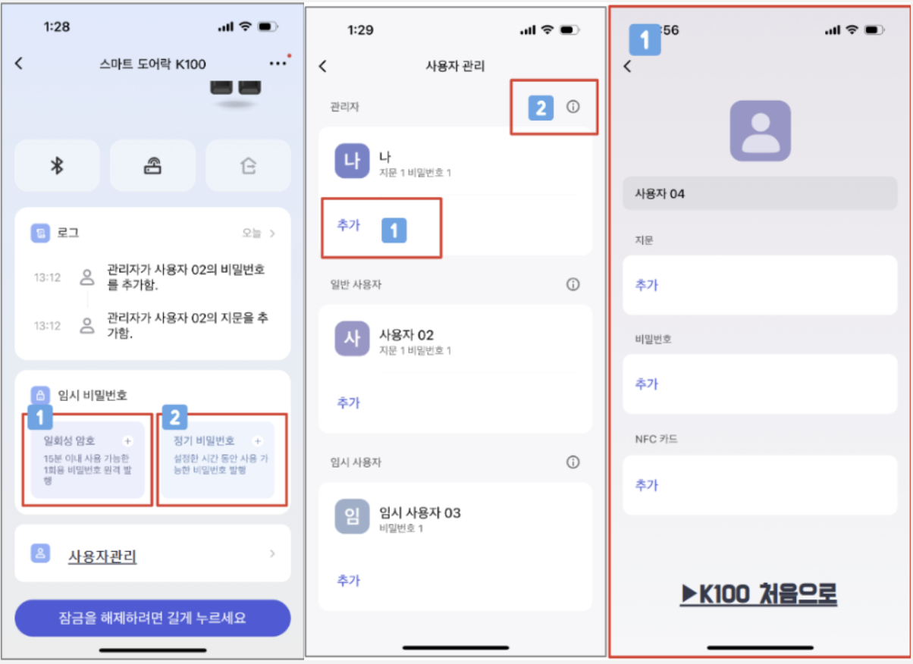
만약에 앱을 사용하고 있지 않고, 도어락만 사용하고 계시는 상황에서는 관리자 비밀번호 분실(지문 미등록)된 상태에서 다른 조치를 취할 수 없습니다. 비밀번호를 분실하지 않도록 각별한 주의가 필요합니다.
질문 14: 스마트 도어락을 이용한 자동화 설정을 하려고 합니다. 그런데, “도어락에 연결된 허브의’자동화를 통한 잠금 해제’ 기능을 켜 주세요”라는 메시지를 나옵니다. 어떻게 해야 하는 지요?
답변 14:
스마트 도어락을 이용한 자동화를 설정하려고 하면 다음과 같은 메시지가 뜹니다.
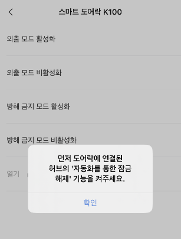
위 메시지가 뜨면 다음과 같이 설정하실 필요가 있습니다.
도어락 메인 화면 >> 우측 상단 … 클릭 >> 원격 기능 >> 자동화를 통한 잠금 해제를 켜 주세요.
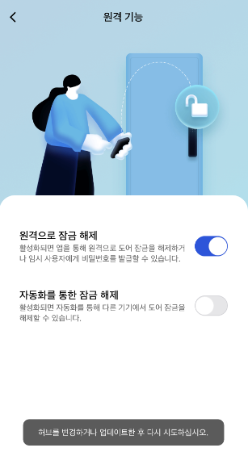
위와 같은 허브관련 메시지가 뜨면, 다음과같이 허브의 장치 설정 맨 하단의 자동 잠금 해제 기능을 활성화 시켜 주시면 됩니다.
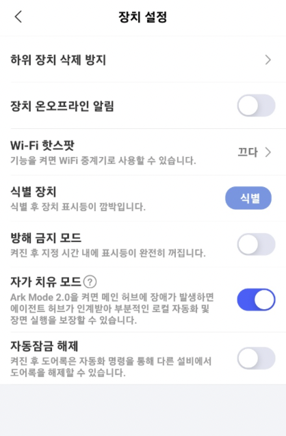
질문 15: 새로운 허브를 추가했는데 기존에 설치된 허브에 연결된 도어락의 연결이 끊겼습니다. 원인이 무엇일까요?
답변 15:
기존 허브의 Zigbee 채널과 새로 추가된 허브의 Zigbee 채널을 비교해 보시기 바랍니다.
허브 메인 화면 >> 네트웍 정보 >> Zigbee 채널에서 확인하실 수 있습니다. 만약 Zigbee 채널이 같다면 새로운 허브를 공장 초기화 하신 후 다시 연결해 보십시오. 채널이 달라야 정상 동작할 수 있습니다. 만약 채널이 다른데도 불구하고 이러한 증상이 발생한다면, 2.4Ghz 대역의 다른 신호(와이파이, 블루투스등) 새로운 허브 추가 대신 Zigbee 리피터(스마트 플러그, (중성선이 연결된) 상시 전원 디바이스)를 추가해 보시기 바랍니다.
질문 16: K100 설치 후 도어락을 열었을 때 잠금고리가 닫히는 시간이 너무 짧습니다. 조금 길게 할 수 있는 방법이 있는지요?
답변 16:
문을 여신 뒤 잠금쇠 튀어나오는 시간을 조정하실 수 있습니다.
앱 내의 도어락 설정 화면 >> 음량 및 언어 >> 문이 닫히지 않은 상 알람 >> 알람 기간을 길게 설정하시면 됩니다.
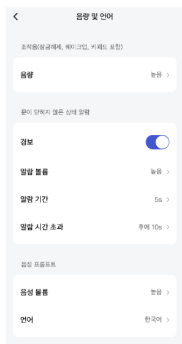
질문 17: 스마트싱스에서는 펌웨어 최신 버전으로 업데이트가 불가한가요?
답변 17:
현재 스마트싱스에서 K100 펌웨어 업데이트는 불가합니다. 최신 버전으로 업데이트를 하기 위해서는 아카라홈앱을 설치하신 뒤 K100도어락 등록 후 펨웨어를 최신 버전으로 업데이트 해 주시기 바랍니다.
질문 18: K100 도어락을 스마트싱즈에 연결하려고 하는데 계속 실패 합니다. 해결책이 무엇인지요?
답변 18:
K100 도어락을 아카라 홈앱에 연결하여 최신 펌웨어로 업데이트 해 주시기 바랍니다. 펌웨어 버전 3.0.0_0022 버전 부터 스마트싱스와 연동 가능합니다. 만약, 아카라홈앱에 연결되어 있다면, 리셋 시켜야 합니다. 그리고, 스마트싱스허브의 펌웨어도 최신 버전으로 업데이트 하시기 바랍니다.
질문 19: 현재 아카라홈에 연결하여 K100을 사용하고 있습니다. 스마트싱스에도 동시에 연결 가능한지요?
답변 19:
K100은 아카라 플랫폼 또는 스마트싱스 플랫폼 한쪽에만 연결 가능합니다. 만약 현재 아카라 홈앱에 연결해서 사용 중이시라면, 반드시 K100을 리셋 시키신 후 스마트싱스에 연결하셔야 합니다.